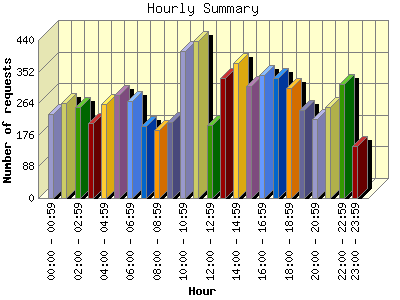
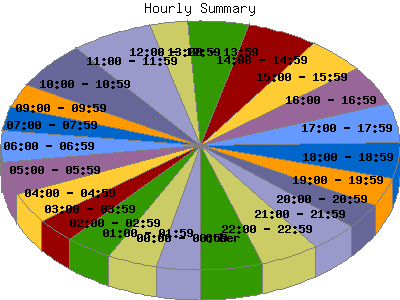

Report generated by Analog 5.91beta1 and Report Magic 2.21
|
Web Server Statistics for "Harish Narayanan (hnarayan) - December 2004" Report generated by Analog 5.91beta1 and Report Magic 2.21 |
The Hourly Summary identifies the level of activity broken down by each hour. Remember that one page hit can result in several server requests as the images for each page are loaded. This summary also compares the level of activity during working hours and after hours as a total for the report time frame.


| Hour | Number of requests | Number of bytes transferred | Percentage of the bytes | Percentage of the requests | |
|---|---|---|---|---|---|
| 1. | 00:00 - 00:59 | 233 | 4.797 MB | 1.76% | 3.52% |
| 2. | 01:00 - 01:59 | 265 | 16.634 MB | 6.11% | 4.00% |
| 3. | 02:00 - 02:59 | 253 | 13.736 MB | 5.04% | 3.82% |
| 4. | 03:00 - 03:59 | 210 | 3.995 MB | 1.47% | 3.17% |
| 5. | 04:00 - 04:59 | 263 | 11.236 MB | 4.12% | 3.98% |
| 6. | 05:00 - 05:59 | 286 | 14.615 MB | 5.36% | 4.32% |
| 7. | 06:00 - 06:59 | 270 | 7.122 MB | 2.61% | 4.08% |
| 8. | 07:00 - 07:59 | 200 | 8.120 MB | 2.98% | 3.02% |
| 9. | 08:00 - 08:59 | 188 | 6.885 MB | 2.53% | 2.84% |
| 10. | 09:00 - 09:59 | 211 | 9.585 MB | 3.52% | 3.19% |
| 11. | 10:00 - 10:59 | 409 | 14.670 MB | 5.38% | 6.18% |
| 12. | 11:00 - 11:59 | 438 | 11.918 MB | 4.37% | 6.62% |
| 13. | 12:00 - 12:59 | 202 | 15.525 MB | 5.70% | 3.05% |
| 14. | 13:00 - 13:59 | 334 | 12.460 MB | 4.57% | 5.05% |
| 15. | 14:00 - 14:59 | 377 | 14.599 MB | 5.36% | 5.70% |
| 16. | 15:00 - 15:59 | 313 | 10.884 MB | 3.99% | 4.73% |
| 17. | 16:00 - 16:59 | 342 | 9.899 MB | 3.63% | 5.17% |
| 18. | 17:00 - 17:59 | 335 | 9.787 MB | 3.59% | 5.06% |
| 19. | 18:00 - 18:59 | 305 | 18.745 MB | 6.88% | 4.61% |
| 20. | 19:00 - 19:59 | 246 | 13.029 MB | 4.78% | 3.72% |
| 21. | 20:00 - 20:59 | 221 | 19.464 MB | 7.14% | 3.34% |
| 22. | 21:00 - 21:59 | 253 | 5.049 MB | 1.85% | 3.82% |
| 23. | 22:00 - 22:59 | 317 | 13.742 MB | 5.04% | 4.79% |
| 24. | 23:00 - 23:59 | 146 | 5.981 MB | 2.19% | 2.21% |
| Work Hours (8:00am-4:59pm) | 2,814 | 106.426 MB | 39.06% | 42.53% | |
| After Hours (5:00pm-7:59am) | 3,803 | 166.052 MB | 60.94% | 57.47% | |
This report was generated on January 7, 2005 16:41.
Report time frame December 1, 2004 01:06 to December 31, 2004 23:42.
| Web statistics report produced by: | |
 Analog 5.91beta1 Analog 5.91beta1 |  Report Magic 2.21 Report Magic 2.21 |